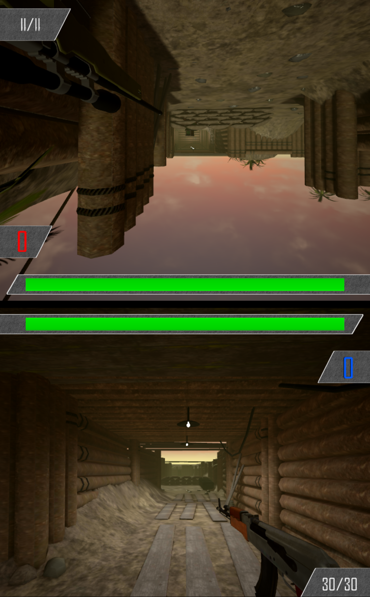

Introduction

In this study, we will evaluate the game called "Battle Screens". Battle Screens is a multiplayer, first-person shooter game for IOS and Android. Battle Screens offers a unique experience through local multiplayer. Currently, it is the only game on any mobile marketplace using a split-screened interface to achieve this.
The image on the right demonstrates the screen layout the consumers will see when they get into the game. The size of the display will vary depending on the display size of the consumer's device. When using an interface as seen in Battle Screens usability issues can occur. This study will examine consumers experiences game, focusing in greater depth on the controls, menues and instructions. In the conclusion of this report, I will discuss strategies on how the future development of this game will address the usability issues that arise from this study. By using the bar on the left-hand side of this website you can explore this usability report of the game Battle Screens